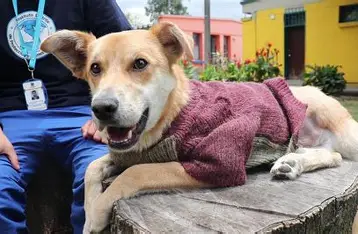
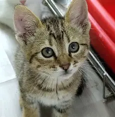
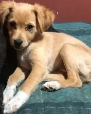
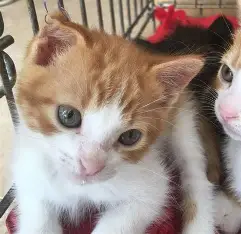

Luna
Perrita · 2 años
Juguetona y cariñosa. Busca una familia que le dé tiempo para adaptarse.
Conoce cómo ayudarEncuentra a tu compañero
Adoptar es una decisión importante. Conoce a estos amiguitos y recuerda que necesitan tiempo, paciencia, alimento y atención veterinaria.

Perrita · 2 años
Juguetona y cariñosa. Busca una familia que le dé tiempo para adaptarse.
Conoce cómo ayudar
Gatito · 3 meses
Curioso y tranquilo. Necesita un espacio seguro y una familia responsable.
Conoce cómo ayudar
Perrito · 5 meses
Amigable y lleno de energía. Le vendrá bien una familia paciente y activa.
Conoce cómo ayudar
Gatita · 3 meses
Dulce y observadora. Busca un hogar tranquilo donde la cuiden con cariño.
Conoce cómo ayudar